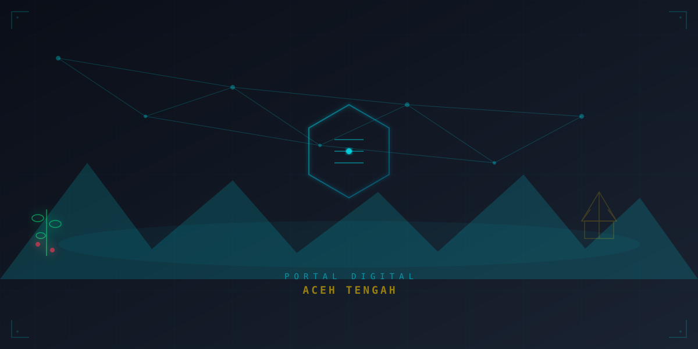

Platform terpadu tata kelola pemerintahan, peta proses bisnis, dan layanan publik digital. Menuju Aceh Tengah Islami, Maju, Sejahtera, dan Berkeadilan melalui transformasi digital berbasis data.
Kabupaten Aceh Tengah dipimpin oleh Bupati Haili Yoga & Wakil Bupati Muchsin Hasan periode 2025-2030 dengan delapan misi besar transformasi.
"Aceh Tengah Islami, Maju, Sejahtera, dan Berkeadilan"
— Visi Bupati & Wakil Bupati Aceh Tengah 2025-2030
Membangun manusia Aceh Tengah yang sehat, cerdas, kreatif, sejahtera, unggul, dan berdaya saing.
Mewujudkan transformasi ekonomi yang hijau, berkelanjutan, dan berbasis potensi lokal kopi Gayo.
Penguatan reformasi birokrasi dan pelayanan publik melalui digitalisasi dan Satu Data.
Pembangunan infrastruktur modern, berkualitas, dan ramah lingkungan untuk seluruh wilayah.
Kesinambungan pembangunan kewilayahan yang merata, berkeadilan, dan berkelanjutan.
Integrasi seluruh basis data pemerintahan dalam satu platform terpadu — didukung AWS & Komdigi.
Pemetaan proses bisnis level 0–2 berdasarkan Permenpan RB No. 19/2018 untuk seluruh OPD di lingkungan Pemerintah Kabupaten Aceh Tengah.
Pendidikan, Kesehatan, Infrastruktur, Pariwisata, Pertanian, Pemberdayaan Masyarakat, Syariat Islam, Perdagangan, Lingkungan Hidup, dan Penanaman Modal.
Lihat Detail →Perencanaan, Keuangan, SDM, Pengawasan, Data & Informasi, dan Pelayanan Administrasi — backbone tata kelola pemerintahan daerah.
Lihat Detail →Kepegawaian, Hukum, Pengadaan, Kearsipan, dan Humas — memastikan kelancaran operasional harian pemerintahan.
Lihat Detail →Inisiatif strategis Bupati Haili Yoga untuk menyatukan seluruh layanan dan data pemerintahan dalam satu portal terpadu.
Layanan administrasi kependudukan online — KTP, KK, Akta — terintegrasi dalam satu portal.
Digitalisasi baca tulis Al-Quran untuk generasi muda Aceh Tengah berbasis aplikasi.
Program persiapan pendidikan berkualitas untuk anak-anak Aceh Tengah menuju jenjang lebih tinggi.
Portal wisata Danau Lut Tawar, Gunung Burni Telong, Landing Lin, dan kebun kopi Gayo.
Sistem monitoring kinerja dan kedisiplinan ASN secara real-time berbasis digital.
Layanan pengelolaan zakat, infak, dan wakaf terintegrasi untuk kesejahteraan umat.
Sistem manajemen pendapatan asli daerah dan pajak daerah secara digital dan transparan.
Kerjasama dengan Amazon Web Services (AWS) untuk infrastruktur cloud Satu Data.
Data real-time tata kelola pemerintahan Kabupaten Aceh Tengah.
Rekomendasi perubahan tata kelola berbasis digital untuk mempercepat reformasi birokrasi dan pelayanan publik.
Buat BPMN interaktif level 0-2 untuk seluruh 37 OPD mengacu Permenpan 19/2018. Visualisasikan cross-functional map (CFM) dan relasi bisnis antar unit. Integrasikan pohon kinerja dengan indikator kinerja utama (IKU) setiap OPD.
Portal ini sebagai front-end tunggal yang terkoneksi dengan database Satu Data Aceh Tengah. Integrasikan adminduk, pajak, perizinan, e-kinerja, dan layanan Baitul Mal dalam satu platform dengan autentikasi terpadu.
Bangun dashboard visualisasi capaian IKU per OPD secara real-time. Monitoring APBD, realisasi anggaran, dan progres program unggulan dengan sistem peringatan dini (early warning system).
Publikasi data terbuka yang bisa diakses startup dan developer lokal via REST API. Dukung program pengembangan talenta digital: pelatihan coding, data management, dan AI untuk pemuda Takengon (program kerjasama dengan Komdigi).
Fitur khusus untuk 14 kecamatan dengan akses offline-capable. Implementasi AI untuk rekomendasi kebijakan berbasis data. Sistem pengaduan dan partisipasi publik real-time. Integrasi IoT untuk smart farming kopi Gayo.
Transformasi portal menjadi startup govtech dengan model bisnis berkelanjutan: premium analytics untuk OPD, pelatihan digital, konsultasi transformasi, dan marketplace data. Replikasi ke kabupaten lain sebagai produk daerah.
Portal Digital Aceh Tengah sebagai startup utama daerah dalam transformasi digital nasional.
Sustainability melalui: SaaS OPD, konsultasi transformasi digital, pelatihan ASN, analytics premium, dan marketplace data terbuka untuk startup lokal.
API publik untuk developer Takengon. Hackathon dan coding bootcamp. Kolaborasi dengan kampus dan Komdigi untuk mencetak talenta digital Gayo.
Cetak biru (blueprint) Portal Digital Daerah yang bisa diadopsi kabupaten/kota lain. Target: menjadi model transformasi digital daerah berbasis data pertama di Aceh.
Selaras dengan SPBE nasional, INA Digital, dan program Satu Data Indonesia. Terkoneksi dengan portal nasional untuk interoperabilitas lintas daerah.
Portal ini adalah langkah awal transformasi digital tata kelola pemerintahan. Partisipasi semua pihak — pemerintah, masyarakat, startup, dan akademisi — adalah kunci keberhasilan.